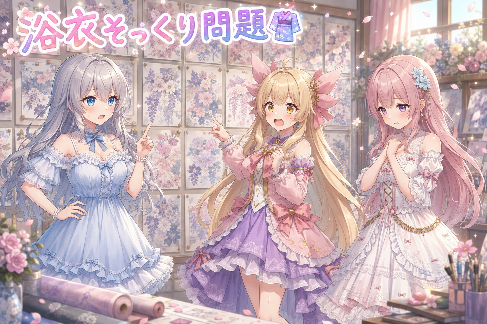
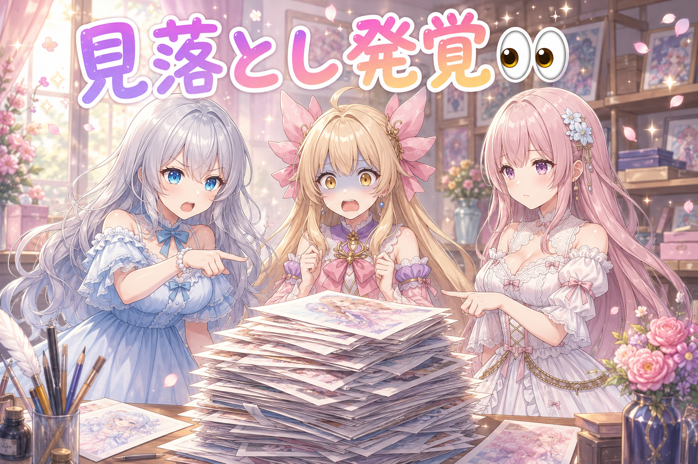
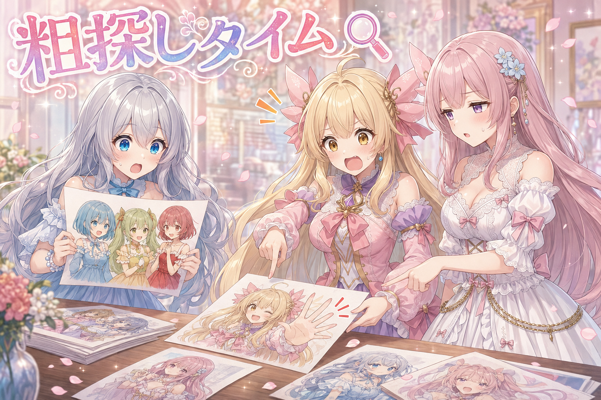
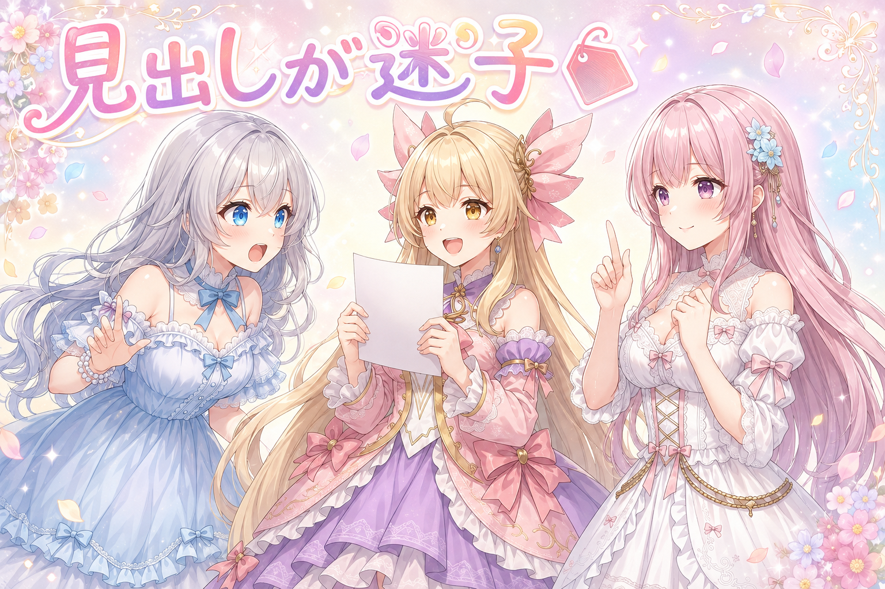
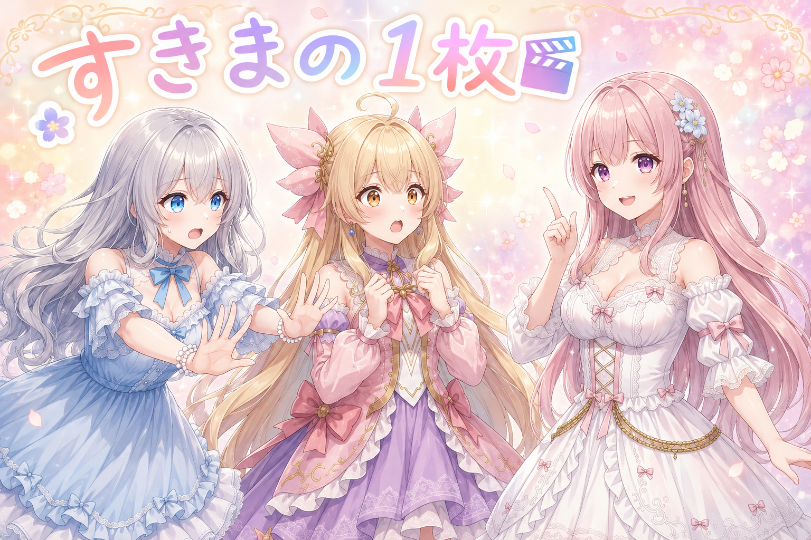
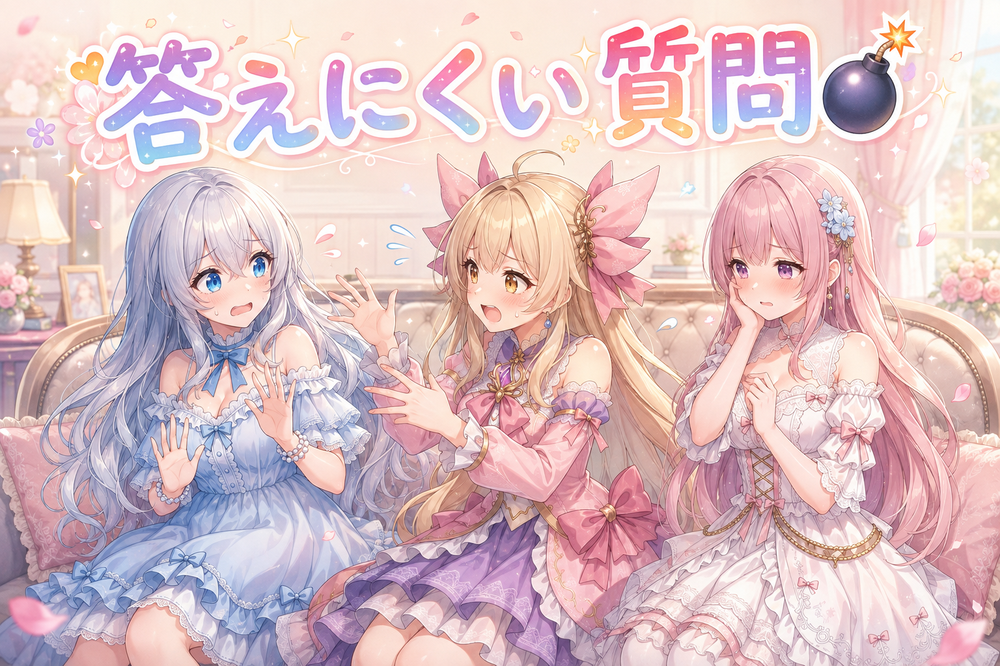

📌 3行まとめ
- 絵の「指定していない部分」が毎回似てくる問題に手を入れ、バリエーションの語彙帳を作って確認待ちの60枠あまりを全部作り直した
- その日作った60枚あまりのうち、目で見ていたのは3分の1ほど。見ないまま終わる作業を検知する仕組みを追加
- タイトルを本文と別工程で作っていたのをやめ、本文と同じ流れで書く方式に変更した

ルピナス （笑顔）
はいこんばんは、AIBSのゆるふわ制作室、司会のルピナスです。今日は絵の話がメインだよ。

アイリス （笑顔）
昨日は宇宙のコンテストに絵を出し直して、動く絵は8秒までって話だったよね！

フィオナ （ふつう）
はい、尺の壁の日でしたね。今日は壁ではなく……鏡でしょうか。

ルピナス （考え中）
鏡って言い方うまいね。今日はね、私たちの絵が「どれも似た顔してる」って気づいちゃった日です。

アイリス （びっくり）
えっ、顔！？あたしの顔がフィオナに似てきたってこと！？

ルピナス （ふつう）
顔じゃない。浴衣の柄とか背景とか、そっちの話。座って。
1. 👘 浴衣も屋台もそっくりさん、から抜け出す

季節のイラストを作っていて、ずっと引っかかっていたことがあります。テーマで指定した部分——たとえば「浴衣を着る」——は狙い通りに出るのに、指定していない部分、つまり柄のデザイン・背景・ポーズ・カメラの角度・色味が、毎回どこかで見たものになってしまう。祭りをテーマにすれば必ず屋台の背景で、りんご飴と金魚がいる。
原因ははっきりしていて、指定しなかった部分を生成側に丸投げしていたからです。丸投げすると、AIは一番無難で頻出な答えを返します。人間だって「なんでもいいよ」と言われたらいつものカレーを作るのと同じです。
対策は二段階でやりました。まず「そもそも何をバリエーションさせるべきか」の項目そのものを洗い出すこと。次に、その項目ごとに実在するタグだけを集めた語彙帳を作ること。和装ひとつ取っても、柄・袖の形・帯の結び方・履物・髪飾りと、分解すればいくらでも軸があります。これまでは花柄という一語で全部を済ませていました。さらに、可愛い・綺麗な方向のものが優先的に選ばれる重みづけと、テーマと噛み合わない組み合わせは弾くルールを入れて、確認待ちだった60枠あまりを全部この方式で書き直しています。

アイリス （無表情）
ねえお姉ちゃん、あたし気づいちゃったんだけど。浴衣の絵、全部おそろいじゃない？三姉妹だからおそろいでいいのかなって思ってたけど、五枚目くらいで怖くなってきた。

フィオナ （しょんぼり）
……実は私も薄々。柄の指定を、花柄、の一言で終わらせていたんです。

アイリス （衝撃）
一言！？世の中の浴衣、花柄しかないと思ってたの！？

フィオナ （あわあわ）
思ってはいません。ただ、書かなくても察してくれるだろうと……。

ルピナス （呆れ）
察してくれないよ。むしろ察してくれた結果が全部同じ花柄なの。空欄は自由じゃなくて、いつものやつって意味になっちゃうんだよね。

アイリス （考え中）
あー、給食のメニュー表で「デザート」って書いてあるとだいたいゼリーみたいな。
ルピナス （笑顔）
それ結構いい例え。だから今日は、書ける項目を全部書き出すところからやり直したの。袖の形、帯の結び方、髪飾り、履物、光の当たり方……。

フィオナ （びっくり）
洗い出してみたら、私が今まで使っていた語彙は本当にごく一部でした。図書館に入って入口の棚しか見ていなかったような感覚です。

アイリス （大笑い）
入口の棚、だいたい新刊コーナーだもんね。みんなそこで満足しちゃうやつ。
ルピナス （ふつう）
で、集めただけじゃダメで。可愛いのが選ばれやすいように重みをつけて、テーマと合わない組み合わせは通さないようにした。夏祭りに真冬のコート着てても困るからね。

アイリス （ドヤ顔）
じゃあこれからは金魚とりんご飴から解放されるってこと！？
フィオナ （ふつう）
解放というより、選択肢のひとつに戻る、が正確ですね。金魚は悪くないんです。毎回いるのが問題で。

アイリス （泣き）
金魚、悪くないのに毎回いるせいで嫌われてるの、ちょっとかわいそうじゃない？

ルピナス （大笑い）
急に金魚の弁護士が現れた。覚えとくね、その優しさ。
📝 ポイント（初心者向け解説・技術メモ・まとめ）
- 初心者向け解説：AIに「おまかせ」って言うと、実はおまかせしてくれないの。いつも通りのごはんが出てくるだけ。だから献立表の空欄を一個ずつ埋めてあげると、急に別のお店みたいな絵が出てくるよ🍧
- 技術メモ：指定漏れ項目（柄・袖・帯・髪飾り・背景・アングル・配色）を軸として明示化し、軸ごとに実在タグの語彙帳を作成。SDXL系はモデルが学習済みのタグでないと絵に反映されないため、自己流の英文ではなくタグの実在性を確認したものだけを採用。可愛い・綺麗方向へ重みづけ＋テーマとの整合フィルタを併用し、既存63枠を新方式で再構成。
- ひとことまとめ：書かなかったところは自由ではなく、いつものやつになる。
2. 👀 今日のやらかし：見たつもりの60枚

今日いちばん恥ずかしかった話です。この日に生成した絵は60枚あまり。ところが、自分の目で実際に見ていたのは3分の1ほどでした。残りは確認待ちの棚に積まれたまま、作業としては終わったことになっていたのです。
原因は、自動処理が最後まで走り切ると「完了」の顔をすること。生成する工程は自動でも、良し悪しを判断する工程は自動にできないのに、完了の通知だけは同じ顔で出てきます。しかも自動チェックの対象は投稿用の文章だけで、企画のメモ50件近くは検査の範囲外でした。
対策として入れたのが「置き去り検知」です。作られたのに人の目を通っていないものを毎回数え上げて、残り何件かを突きつける。気合いで思い出すのをやめて、数字に言わせることにしました。
ルピナス （ふつう）
はい、というわけで今日のやらかしコーナー。アイリス、宿題ぜんぶ終わった？
アイリス （ドヤ顔）
終わった！完璧！最後のページまでやったもん！
ルピナス （考え中）
へえ。じゃあこの、机の上に積んである残り40枚くらいは何かな。
アイリス （衝撃）
……えっ。あたし、やったやつしか数えてなかった。

フィオナ （無表情）
それは……やった分だけを見て、全体を見ていないという状態ですね。

アイリス （あわあわ）
だって終了！って画面が出たんだもん！終了って書いてあったら終了じゃない！？
ルピナス （呆れ）
それね、機械の言う終了は「私の仕事は終わった」って意味なの。あなたの仕事の話は一言もしてない。
フィオナ （しょんぼり）
洗濯機が止まった音を聞いて、洗濯が終わったと思ってしまうのに近いです。干す工程が丸ごと残っているのに。
アイリス （泣き）
うわ、それあたし毎回やってる……。
ルピナス （ふつう）
だから今日は、干してない洗濯物が何枚あるか毎回声に出して言う係を作ったの。残り43枚です、って冷たく言ってくる係。
フィオナ （ふつう）
優しく言うと聞き流してしまうので、冷たいほうが良いと思います。
アイリス （無表情）
フィオナが今日いちばん冷たい……。
ルピナス （考え中）
あとね、この積み残しを深夜まで引きずって片付けるの、正直やりすぎだったと思ってる。数える仕組みを入れたのは、夜中に根性で目を凝らさないで済むようにするためでもあるからね。眠い目で見た合格判定ほど当てにならないものはないよ。
アイリス （笑顔）
眠い時のあたし、全部かわいく見えるもんね。

フィオナ （大笑い）
それはそれで幸せな才能ですけれど、検品には向きませんね。
📝 ポイント（初心者向け解説・技術メモ・まとめ）
- 初心者向け解説：機械が「終わりました」って言っても、それは機械の担当分が終わっただけ。洗濯機が止まっても洗濯物は干されてないのと同じだよ。残り何枚か数えてくれる係を作っておくと安心💡
- 技術メモ：生成完了と検品完了を別ステータスとして持ち、未検品件数を毎回出力する「置き去り検知」を追加。自動検査の対象範囲（投稿文のみ／企画メモは対象外）が実態とずれていたため、検査対象の定義そのものを見直した。
- ひとことまとめ：完了の通知は、誰の完了なのかを疑う。
3. 🔍 丸く切れた絵と、6本目の指

置き去りになっていた絵を順に目で見ていくと、機械の検査では引っかからない不良がぞろぞろ出てきました。四隅が黒く落ちて丸く切り抜かれたようになっている絵、立っているだけで動きが何もない絵、そして指が6本ある手。
さらに大物がひとつ。キャラクターの見た目を覚えさせた追加学習のモデルが効いておらず、髪色も髪型も別人になっている絵が見つかりました。絵として綺麗かどうか以前の問題なので、これは問答無用で全部やり直しです。
もうひとつ、可愛さの調整で八重歯の指定を外した影響で、古い八重歯ありの絵だけが棚に残っている状態になっていました。並べて比べると判断が濁るので、いったん八重歯なしの版に戻してから見直しています。
ルピナス （ふつう）
さあ実況していくよ。ただいま棚から一枚目を取り出しました。アイリス、どうですか。
アイリス （びっくり）
んー……あれ？なんか四隅が真っ黒。あたしが望遠鏡の中にいる。
フィオナ （ふつう）
丸く切り抜かれていますね。額縁のつもりが、額縁だけが主役になっています。
ルピナス （考え中）
はい没。次いきます。この絵、どうかな。
フィオナ （無表情）
それだけです。とても綺麗に、ただ立っています。
ルピナス （呆れ）
うちのルールで、棒立ちは問答無用で作り直しなの。可愛い服着せて棒立ちさせるくらいなら、転んでるほうがまだ絵になる。
アイリス （笑顔）
じゃあ次あたしのやつ！ほら見て、傘持ってて雰囲気あるでしょ！
ルピナス （考え中）
うん、いいと思う。……ちょっと待って、手を数えて。
アイリス （あわあわ）
いち、に、さん、し、ご、ろ……ろく！？あたし進化してる！

ルピナス （衝撃）
で、極めつけがこれ。サイト用の絵なんだけど、私たち三人とも髪の色も髪型も違うの。
アイリス （無表情）
えっ、この子だれ？かわいいけど誰？
フィオナ （しょんぼり）
見た目を覚えさせたモデルが効いていなかったようです。絵としては悪くないのに、私たちではないという致命的な不良ですね。
ルピナス （ふつう）
綺麗に描けてるほど気づきにくいのが厄介なんだよね。品質は合格、本人確認は不合格。全部やり直しました。
アイリス （考え中）
ねえ、さっきの6本指の子と、髪型ちがう子で新ユニット組めない？
ルピナス （大笑い）
組めません。デビュー前に解散でお願いします。
📝 ポイント（初心者向け解説・技術メモ・まとめ）
- 初心者向け解説：AIの絵は、上手に描けてるかどうかと、その子が本人かどうかは別問題なの。すごく綺麗な絵でも髪の色が違ったら他人だから、まず本人確認から見るのがコツだよ👀
- 技術メモ：目視で検出した不良は、四隅の円形トリミング、動きのない立ち絵、指の本数破綻、キャラ用LoRAが適用されていないことによる髪色・髪型の不一致。特にLoRA未適用は絵の品質そのものは高いため自動検査をすり抜けやすい。可愛さ指標として使っていた八重歯タグを外したため、旧版の絵が残る状態は比較判断を濁らせるので事前に差し戻し。
- ひとことまとめ：綺麗さより先に、本人かどうかを見る。
4. 🏷️ タイトルだけ別の話をしていた

投稿につける文章まわりでも直しがありました。これまでタイトルは本文とは別の工程で作っていたのですが、そうすると本文と噛み合わないタイトルが普通に生まれます。中身は夕暮れの話なのに、見出しだけ朝の話をしている、というような食い違いです。
直し方は二択ありました。タイトルを本文から作り直すか、後から矛盾を検査するか。選んだのは前者で、本文を書くのと同じ流れでタイトルも一緒に書く方式にしました。後から検査するより、そもそもずれない作り方にするほうが確実です。
あわせて、文章に書いてある場面と絵に写っている場面が食い違っていないかを見る検査を新設し、30件近く見つかりました。書き直しは自動で量産せず、1本ずつ手で直しています。
アイリス （笑顔）
はい、ここからは漫才いきまーす。あたしが書いた投稿文、聞いてくれる？

アイリス （ふつう）
タイトル、朝の光がまぶしい。本文、真夜中に一人でアイス食べてます。

ルピナス （びっくり）
時差！朝と真夜中、同じ投稿の中に共存してる。
アイリス （無表情）
だってタイトルは先に決めたんだもん。本文はあとから気分で書いた。
ルピナス （呆れ）
それだよ原因。タイトルと本文を別々の人が書いてるみたいな作り方してたの。
フィオナ （ふつう）
表紙を先に印刷してから中身を書き始める本、のような状態ですね。
アイリス （考え中）
それ売ってたらちょっと読みたいけどね。表紙と中身が全然関係ない本。
ルピナス （大笑い）
面白本としてはアリだけど、うちの投稿でやると事故なの。だから本文を書いた勢いのままタイトルも書くようにした。

フィオナ （考え中）
後から矛盾を見つける検査を足す案もありましたが、見つけてから直すより、ずれない書き方にするほうが手数が少ないですね。
アイリス （びっくり）
あー、こぼしてから拭くんじゃなくて、こぼれないコップを使えってことか。
ルピナス （笑顔）
そうそう。で、ついでに文章の場面と絵の場面がずれてないかも見るようにしたら、30件近く出てきたよ。夜の絵に昼のセリフとか。
アイリス （あわあわ）
30件！？それ全部あたし！？
ルピナス （ふつう）
犯人捜しはしない。全員の分を一本ずつ手で直したよ。ここは自動で流し込むと、また同じ顔の文章が並ぶからね。
フィオナ （ふつう）
今日の一本目の話とつながりますね。楽をした場所から、そっくりさんが生まれる。
アイリス （ドヤ顔）
じゃあ手で書けば金魚は出ない！
📝 ポイント（初心者向け解説・技術メモ・まとめ）
- 初心者向け解説：見出しと中身は、同じ人が同じ気分のときに書くのがいちばんずれないの。表紙を先に印刷してから中身を書き始めたら、そりゃ話が合わなくなっちゃうよね📖
- 技術メモ：タイトル生成を本文生成と同一工程に統合し、本文出力時にタイトルも同時に受け取る形へ変更。事後検査で矛盾を潰すより、生成時点で不整合が発生しない構造にするほうが検査コストが低い。あわせて文章内の場面描写と画像内容の齟齬を検出する検査を新設し、該当した投稿文は自動置換せず個別に手書きで修正。
- ひとことまとめ：あとで検査するより、ずれない作り方にする。
5. 🎬 コマとコマのすきまに、もう1枚

漫画動画のほうも動きました。ページの切り替えは横スライドで進む形に決まっていて、静止画のコマを順に見せていく紙芝居の作りです。
そこで今日調べたのが、コマとコマの間に挟む1枚の画面。時間経過を示すもの、場面が切り替わったことを示すもの、目を休ませるための暗転や白転、擬音だけの画面、集中線だけの画面、タイトルカード。漫画やアニメでは当たり前に使われている転換の道具ですが、種類と使いどころを整理して一覧にしました。
大事なのは、4コマの形に縛られる必要はないということ。分かりやすさのために画像を足しても、順番を入れ替えても構いません。読者が迷わないことが最優先です。
アイリス （笑顔）
はいクイズいくよー！漫画で、場面がガラッと変わる前にはさむ画面といえば？
アイリス （笑顔）
正解！白転だね。じゃあ、時間がだいぶ進んだことを伝える画面は？

フィオナ （笑顔）
登場人物が全員お風呂に入っている画面です。
ルピナス （びっくり）
待って待って、フィオナが今日おかしいよ。それどこで覚えたの。
フィオナ （ふつう）
時間が経った合図として、風景ではなく生活の場面を挟むと、視聴者が自然に時間の流れを感じると考えました。
ルピナス （考え中）
理屈は通ってるんだけど、風呂に入るたびに時間が飛ぶ世界になっちゃうでしょ。正解は、夕暮れの空とか、時計とか、文字だけの短い画面ね。
アイリス （大笑い）
フィオナが珍回答するの新鮮すぎる。あたしの仕事とられた。

フィオナ （照れ）
……すみません、今日は少し頭が回っていないようです。
ルピナス （ふつう）
それ夜通し作業のせいだと思うから、あとでちゃんと休もうね。で、この挟む画面って地味だけど超大事なの。無いと、次のコマが急に始まって読者が迷子になる。
アイリス （考え中）
あー、話してる途中で急に別の話に飛ぶ人みたいな？
ルピナス （笑顔）
そう。ところであなたのことなんだけど。
アイリス （あわあわ）
今わざとやったでしょ！？場面転換なしで話題変えたでしょ！？
フィオナ （大笑い）
今のが実演でしたね。挟む画面がないと、こうなります。
ルピナス （ふつう）
あと決めたのは、4コマの形にこだわらないこと。分かりやすくするためなら絵を足していいし、順番も入れ替えていい。形式より、伝わるかどうかが先。
📝 ポイント（初心者向け解説・技術メモ・まとめ）
- 初心者向け解説：お話が急に別の場面に飛ぶと、読んでる人は迷子になっちゃうの。だから間に「はい、ここで時間が進みますよー」っていうお知らせの1枚を挟んであげると、すっと付いてこられるよ🌙
- 技術メモ：紙芝居型の縦動画で使う転換画面を分類（時間経過／場面転換／アイキャッチ／暗転・白転／擬音のみ／集中線のみ／タイトルカード）し、静止画1枚と効果音で再現する前提で用途を整理。ページ送りは横スライド。コマ数は4コマ形式に固定せず、可読性を優先して加減・並べ替えを許容。
- ひとことまとめ：転換の1枚は、読者を迷子にしないための道しるべ。
6. 🎁 お楽しみコーナー：禁断の質問コーナー

今夜は、聞かれたら困る質問に三人が正面から答えます。逃げは許されません。
ルピナス （笑顔）
はい、禁断の質問コーナー。今夜の第一問。三姉妹の中で、いちばん部屋が散らかっているのは誰でしょう。
アイリス （あわあわ）
待って、これあたしって言われるやつでしょ！？先に言っとくけど、あれは散らかってるんじゃなくて、置き場所を全部覚えてるだけだから！
フィオナ （ふつう）
アイリスちゃん、先週その置き場所を三十分探していましたよ。
ルピナス （大笑い）
はい第二問。妹たちに内緒にしていること、あります？
フィオナ （照れ）
……あります。夜中にこっそりお菓子を食べています。棚の奥のやつです。
アイリス （衝撃）
あれフィオナ！？あたしずっと妖精のしわざだと思ってた！
フィオナ （照れ）
妖精ということにしておいてほしかったです。
アイリス （ドヤ顔）
じゃあお姉ちゃんは？お姉ちゃん、絶対なんかあるでしょ。
ルピナス （ふつう）
私は無いよ。健全に生きてます。
フィオナ （考え中）
では、確認待ちの絵を三分の一しか見ずに完了と言っていたのは、どなたでしたっけ。
ルピナス （衝撃）
それは……今日ちゃんと白状したでしょ！？
アイリス （大笑い）
白状したのは追い詰められたからだよね？自分から言った？言ってないよね？

ルピナス （あわあわ）
待って、今日は私が裁く側だったはずなんだけど。
アイリス （ドヤ顔）
はい、本日の有罪はお姉ちゃんに決定しまーす。判決、明日は全部見ること。

ルピナス （しょんぼり）
妹に判決を下された姉の顔、しないでいい？
ルピナス （ふつう）
というわけで、みんなにも聞きたいです。人に言えないけど実は毎回サボってる工程、ありませんか。私は今日バレたので、道連れを募集します。コメントで白状していってね。
7. 💐 今日のまとめ
- 指定しなかった部分は自由ではなく「いつものやつ」になる。バリエーションさせたい項目は、面倒でも一つずつ言葉にする
- 機械が出す完了通知は機械の担当分の完了。人が見るべきものが何件残っているかは、別に数えさせる
- 見出しと中身のずれは、後から検査するより、同じ流れで一緒に書いてしまうほうが早い
- 綺麗に描けている絵ほど、本人じゃないことに気づきにくい
みんなは、自分の作ったものを見直すとき、どこから見るタイプ？私は今日、見る順番より「全部見たか数える」ほうが大事だと痛感しました。
💬 コメント
お名前とコメントだけで送れるよ（承認されるとみんなに表示されます🌸）
コメントを読み込み中…